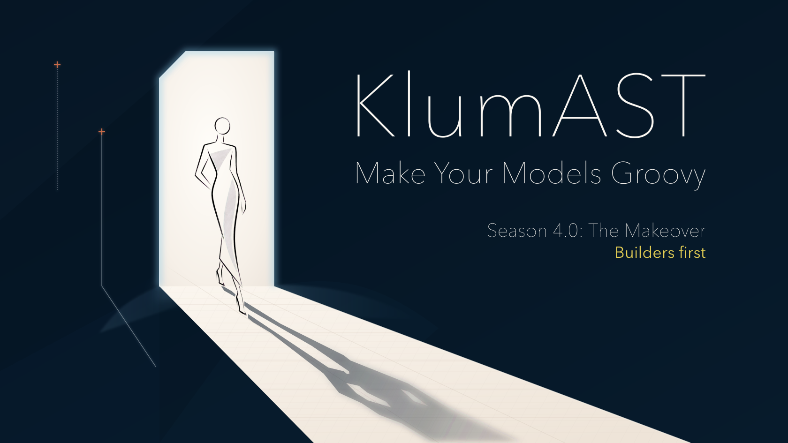

KlumAST

What is KlumAST?
KlumAST turns annotated model classes into concise, statically checked Groovy DSLs. It is designed for a Schema Developer to describe a model once, a Model Writer to configure it through a readable DSL, and client code to consume the completed model without generated mutation methods.
The Terms and role guide defines the core terms — especially Schema and Model — along with these responsibilities and the value kinds used throughout the documentation.
Why models as code?
A useful model-as-code approach should be easy to author, clear to change, and safe to verify:
- Automate model construction. Generated Builders, factories, and DSL mutators remove repetitive implementation work while retaining statically checked Groovy source.
- Support the authoring experience. Generated Builder documentation and IDE mirrors make the model's construction surface discoverable without hand-maintained DSL stubs.
- Validate and test the actual model. A Schema can declare its own constraints, and each generated root factory runs validation as it materializes a completed model. Model-specific scenarios are ordinary unit tests: construct the model, assert its completed state or validation result, and run the same tests locally and in a pull-request build. They complement, rather than replace, integration tests against the eventual target.
Typical validation output names the rule that emitted it:
- ERROR #ConnectivityChecks.portMustBeInRange(): port must be between 1 and 65535
Construction paths retain the source context, which is especially useful when a model is split across scripts. For
example, an illustrative failure from models/production.groovy could read:
<root>.service($/Deployment.From:file(models/production.groovy)/service):
- ERROR #port: Field 'port' must be set
Generated factories configure a mutable Builder graph and return completed, structurally immutable DSL Objects. Lifecycle
work through POST_TREE runs on Builders; materialization happens before validation. See Basics, Model Phases, and
the Builder First Migration guide. Construction paths describe model-source locations in detail.
These capabilities make KlumAST especially useful for GitOps and other *aC (anything-as-code) workflows. Git can record a configuration's structure, but a checked-in structure is not necessarily a verified model. Read why *aC needs model-level tests before treating configuration in Git as the end of the story.
Example
Given the following config classes:
@DSL
class Config {
Map<String, Project> projects
boolean debugMode
List<String> options
}
@DSL
class Project {
@Key String name
String url
MavenConfig mvn
}
@DSL
class MavenConfig {
List<String> goals
List<String> profiles
List<String> cliOptions
}
A config object can be created with the following dsl:
def github = "http://github.com"
def config = Config.Create.With {
debugMode true
options "demo", "fast"
option "another"
projects {
project("demo") {
url "$github/x/y"
mvn {
goals "clean", "compile"
profile "ci"
profile "!developer"
cliOptions "-X -pl :abc".split(" ")
}
}
project("demo2") {
url "$github/a/b"
mvn {
goals "compile"
profile "ci"
}
}
}
}
The projects closure is optional syntactic sugar; project entries can also appear directly in the Config callback.
Since complete objects are created, using the configuration is simple:
if (config.debugMode) println "Debug mode is active!"
config.projects.each { name, project ->
println "Running $name with '${project.mvn.goals.join(' ')}'"
}
def projectsWithoutClean = config.projects.findAll { !it.value.mvn.goals.contains("clean")}.values()
if (projectsWithoutClean) {
println "WARNING: The following projects do not clean before build:"
projectsWithoutClean.each {
println it
}
}
For the recommended 4.0 Gradle setup and generated-source-mirror workflow, start with Gradle Onboarding.